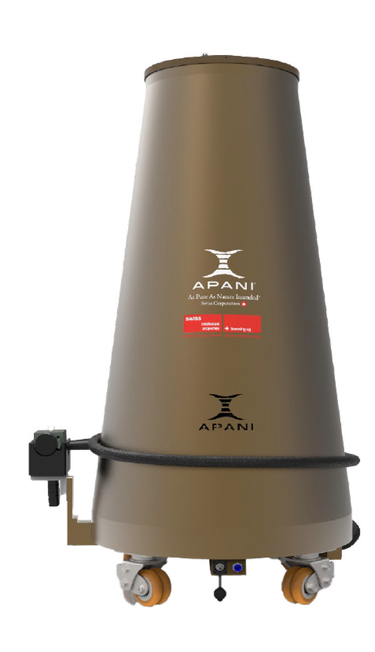

SCHWEISSEN • SCHNEIDEN • REINIGEN
AP2000 3-in-1 Handheld-Lasersystem

Das revolutionäre 3-in-1 Lasersystem für die moderne Metallbearbeitung
Der APANI AP2000 definiert die Metallbearbeitung neu: Ein einziges Handheld-Lasersystem vereint Laserschweissen, Laserschneiden und Laserreinigen in einem kompakten Gerät. Anstatt drei separate Maschinen anzuschaffen, zu warten und zu betreiben, erledigen Sie mit dem AP2000 sämtliche Aufgaben mit einem einzigen, leistungsstarken 2000W Faserlaser. Das spart nicht nur erhebliche Investitionskosten, sondern reduziert auch den Platzbedarf in Ihrer Werkstatt und verkürzt die Einarbeitungszeit für Ihr Team deutlich.
Das Herzstück des AP2000 ist der ergonomisch optimierte Schweisskopf — mit nur 1000 Gramm Gewicht und einer schlanken Breite von lediglich 47 Millimetern. Dieses kompakte Design ermöglicht ermüdungsfreies Arbeiten, selbst über mehrere Stunden hinweg, und gewährt Zugang zu engen und schwer erreichbaren Stellen, an denen konventionelle Schweissgeräte schlicht nicht einsetzbar sind. Der komfortable Griff und das moderne Erscheinungsbild unterstreichen den professionellen Anspruch dieses Laserschweissgeräts.
Dank der drahtlosen Steuerung passen Sie alle Parameter in Echtzeit und kabellos an — ohne den Arbeitsfluss zu unterbrechen. Vorprogrammierte Einstellungen für gängige Materialien und Anwendungen beschleunigen die Einrichtung und machen den AP2000 auch für Einsteiger im Bereich Laserschweissen zugänglich. Das 5-stufige Kontaktlicht-Sicherheitssystem sorgt dafür, dass der Laser ausschliesslich bei korrektem Materialkontakt aktiv ist, was höchste Sicherheitsstandards gewährleistet.
Die hochwertige Präzisionsoptik mit einer Fokussierlinse (Ø20mm, F=150mm) und Kollimatorlinse (Ø20mm, F=50mm) garantiert eine stabile Strahlqualität bei einer Wellenlänge von 1064nm. Die einstellbare Spotgrösse lässt sich flexibel an jedes Werkstück und jede Aufgabe anpassen — ob filigrane Schweissnähte an Edelstahl, präzise Schnitte an Kohlenstoffstahl oder die gründliche Reinigung von Metalloberflächen.
Ob Metallbau und Stahlkonstruktionen, Rohrleitungsbau, Edelstahlverarbeitung oder Reparatur und Instandhaltung — der AP2000 ist das ideale Laserschweissgerät für Schweizer Betriebe, die Effizienz, Qualität und Vielseitigkeit in einem einzigen System suchen. Fordern Sie noch heute eine kostenlose Beratung an und erleben Sie die Zukunft der 3-in-1 Lasertechnologie.
Spezifikationen des AP2000
Alle technischen Details auf einen Blick — konzipiert für maximale Leistung und Zuverlässigkeit.
| Laserleistung | bis 2000W |
|---|---|
| Wellenlänge | 1064 nm |
| Faseranschluss | QBH (Industriestandard) |
| Fokussierlinse | Ø20mm, F=150mm |
| Kollimatorlinse | Ø20mm, F=50mm |
| Apertur | 16mm (max.) |
| Schweisskopf-Gewicht | ≤ 1000g |
| Schweisskopf-Breite | 47mm |
| Funktionen | Schweissen, Schneiden, Reinigen |
| Schutzgase | Stickstoff, Argon, Helium, Druckluft |
| Wasserkühlung | Empfohlen ab 500W |
| Durchflussrate | Min. 1.8 L/min |
Warum der AP2000 überzeugt
3-in-1 Funktionalität
Schweissen, Schneiden und Reinigen in einem Gerät — drei Maschinen ersetzt durch ein einziges System.
Ergonomisches Design
Komfortabler Griff, modernes Erscheinungsbild — nur 1000g und 47mm breit für ermüdungsfreies Arbeiten.
Einstellbare Spotgrösse
Flexibel anpassbar für jedes Werkstück — von feinen Schweissnähten bis zu grossflächiger Reinigung.
Drahtlose Steuerung
Kabellose Parameteranpassung in Echtzeit — ohne Unterbrechung des Arbeitsflusses.
Präzisionsoptik
Hochwertige Linsen für stabile Strahlqualität — konstante Ergebnisse bei jeder Anwendung.
Kontaktlicht-Sicherheit
5-stufiges Sicherheitssystem — der Laser ist nur bei korrektem Materialkontakt aktiv.
Kompakte Bauweise
Hohe Staubschutzklasse, robust und langlebig — konzipiert für den anspruchsvollen Industrieeinsatz.
Vielseitig einsetzbar in jeder Branche
Der AP2000 ist die ideale Lösung für anspruchsvolle Metallbearbeitung in unterschiedlichsten Industriezweigen.
Metallbau & Stahlkonstruktionen
Schweissen und Schneiden von Stahlprofilen, Trägern und Konstruktionselementen mit höchster Präzision.
Automobilindustrie
Karosserieteile schweissen, Oberflächen reinigen und präzise Schnitte an Fahrzeugkomponenten ausführen.
Rohrleitungsbau
Rohre und Leitungen schweissen — der schmale 47mm-Schweisskopf erreicht auch engste Stellen.
Edelstahlverarbeitung
Makellose Schweissnähte und saubere Oberflächen — unverzichtbar in der Lebensmittel- und Pharmaindustrie.
Küchengeräte & Haushaltswaren
Hochwertige Verarbeitung von Edelstahlgehäusen, Griffen und Verbindungselementen.
Reparatur & Instandhaltung
Schweissreparaturen, Oberflächenreinigung und Nachbearbeitungen direkt vor Ort — mobil und flexibel.
Alles inklusive — vom ersten Tag an
Lieferumfang
- 1x Handheld-Laserschweisskopf
- 5x Ersatz-Kupferdüsen
- 3x Ersatz-Schutzgläser
- 1x Systemsteuerung
- 1x Bedienungsanleitung (DE)
Service & Garantie
- 1 Jahr kostenlose Garantie (exkl. Linsen & Verschleissteile)
- Reaktionszeit Kundendienst: innerhalb 8 Stunden
- Kostenlose technische Beratung & Software-Updates
- Lebenslanger Wartungsservice (nur Materialkosten)
FAQ zum AP2000
Antworten auf die wichtigsten Fragen rund um das AP2000 3-in-1 Handheld-Lasersystem.
Was kann der AP2000 alles?
+Der AP2000 vereint drei Funktionen: Laserschweissen, Laserschneiden und Laserreinigen. Sie ersetzen drei separate Geräte durch ein einziges System und sparen Platz, Kosten und Einarbeitungszeit.
Welche Materialien kann der AP2000 schweissen?
+Edelstahl, Kohlenstoffstahl, verzinkter Stahl, Aluminium und weitere Metalle. Die einstellbare Leistung von bis zu 2000W ermöglicht das Schweissen unterschiedlicher Materialstärken.
Wie schwer ist der Schweisskopf?
+Nur 1000g bei einer Breite von 47mm. Das ergonomische Design ermöglicht ermüdungsfreies Arbeiten auch über längere Zeiträume und Zugang zu engen Stellen.
Brauche ich eine Wasserkühlung?
+Ab 500W Dauerleistung wird eine Wasserkühlung empfohlen. Für niedrigere Leistungen und kurze Einsätze ist keine Kühlung erforderlich. Die minimale Durchflussrate beträgt 1.8 L/min.
Welche Schutzgase werden unterstützt?
+Stickstoff, Argon, Helium und Druckluft. Die Wahl des Schutzgases hängt vom Material und der Anwendung ab. Argon eignet sich für die meisten Standard-Schweissarbeiten.
Ist der AP2000 auch für Anfänger geeignet?
+Ja. Die drahtlose Steuerung und vorprogrammierte Parameter machen den Einstieg einfach. Dennoch empfehlen wir eine Grundschulung im Laserschweissen für optimale Ergebnisse und Sicherheit.
Kann ich den AP2000 vor dem Kauf testen?
+Selbstverständlich. Wir bieten Live-Vorführungen mit Ihren eigenen Werkstücken an — entweder bei Ihnen vor Ort oder in unserem Showroom in Wangen, Schweiz.